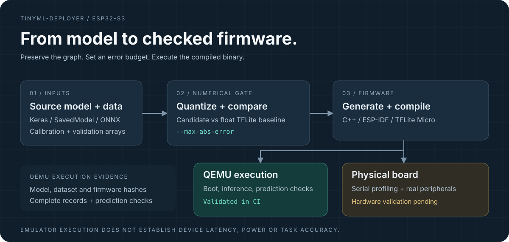

Prediction gates
Compare quantized candidates with a float TFLite baseline on supplied inputs. INT8 conversion requires representative calibration data and an explicit error limit.
Project case study / Embedded ML
From an original model to checked ESP32-S3 execution.
A Python CLI for engineers who need to validate model predictions, generate ESP-IDF firmware and check inference in QEMU before using a physical board.
The engineering problem
A converted model still needs compatible operators, a defined memory budget, a successful firmware build and execution evidence. A desktop prediction alone cannot establish that the generated firmware behaves as expected.
TinyML Deployer makes these steps explicit. Supplied validation samples and error limits gate conversion and execution. Reports retain model and dataset identities so results can be traced to the inputs that produced them.
Recorded workflow / 54 seconds
The video is an edited presentation, with its own recorded run. The evidence table below cites the separately archived CI run. The sine example did not achieve model-size savings.
Implementation

Compare quantized candidates with a float TFLite baseline on supplied inputs. INT8 conversion requires representative calibration data and an explicit error limit.
Generate C++ wrappers, register built-in model operators, check tensor buffers and use explicit tensor-arena and flash budgets.
Boot actual compiled ESP32-S3 firmware in pinned Espressif QEMU, retaining ESP-NN optimized kernels.
Validate complete inference records, model and dataset identities, observation counts and prediction error. Export JSON or standalone HTML reports.
Archived CI / 13 October 2026
The archived CI reports contain 24 inference observations per fixture. Each deployed model is compared with desktop execution of that same model.
| Recorded measure | Float32 dense graph | INT8 convolutional graph |
|---|---|---|
| Completed observations | 24 | 24 |
| Samples × repetitions | 8 × 3 | 8 × 3 |
| Maximum absolute prediction error | 8.94069672e-08 | 0 |
| Configured error limit | 0.0001 | 0.02 |
| Prediction agreement | Passed | Passed |
| Physical-board validation | Not run | Not run |
These are different integration-test graphs. The results establish prediction agreement for the supplied observations, with no claim of comparative task accuracy, quantization savings or physical-board performance. Zero INT8 difference applies only to these observations.
Try it
Use Python 3.11 or 3.12. The older published 0.1 PyPI package uses a different interface. Install this release from source.
git clone --branch v0.2.0-beta.1 --depth 1 \
https://github.com/alexhaya4/tinyml-deployer.git
cd tinyml-deployer
python -m venv .venv
# Linux / WSL / macOS
. .venv/bin/activate
python -m pip install -e '.[emulation]'
tinyml-deployer --helpInstall and export the pinned ESP-IDF toolchain. Run tinyml-deployer doctor --report environment.json to check the Python and firmware-build environment.
Train the sine model, provide separate calibration and validation data, choose explicit error limits and generate a new firmware project.
Build with ESP-IDF, then run the firmware with the pinned Espressif QEMU release. Read the generated report before interpreting a run as successful.
Current scope
Generated float32 and INT8 integration fixtures compile and execute in QEMU. Physical-board profiling and application-level validation remain pending.
Other ESP32 generation paths need separate toolchain, execution and board validation. STM32F4/H7 profiles support analysis only; firmware generation rejects those targets.
QEMU timing is emulator timing. Static resource estimates cannot prove a compiled application fits or runs. The version remains a beta, including when GitHub labels it Latest.
Next engineering milestone
Have a physical board? Run the documented workflow and share the board configuration, exact source revision, model and dataset details, build output and serial-profile report. Report failures and successful runs with enough detail to reproduce them.